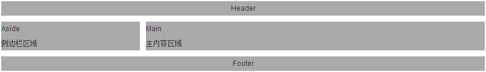

两列布局
实现目标：
两栏结构，左栏固定宽度主内容自适应宽度。最常见和经典的网页呈现之一，如下图
解决思路：
一、absolute+margin(或父元素padding)
原理：（1）对aside设置absolute使其脱离文档流；（2）对main设置margin使其不被aside覆盖或者对父元素设置padding使不被覆盖。
优点：在设置aside高度小于main的情况下能够很好的达到设计效果，并且HTML结构中main与aside可以随意交换位置。
缺点：块级元素的宽度未设置则自动填充父元素，高度未设置则由包裹内容决定。当main的内容少，高度小于aside时，aside将会溢出bd到footer（aside已脱离文档流）.
警告: main高度超过aside时，aside下面会有空白。
适用场景：（1）aside的高度确保小于main，且能接受aside的下方空白；（2）设置aside和main高度相同，main设置overflow:scroll。
二、left+margin
原理：（1）对aside设置float使其脱离文档流；（2）float会使得紧随其后的元素环绕在其周围。对main设置margin中断环绕，main自成封闭矩形。
注意事项：给父元素bd设置为块级格式化上下文（BFC），避免float的aside溢出。根据BFC规则，会计算其中float元素的高度。
优点：BFC解决了方法一存在未设置高度导致aside溢出的问题。
缺点：只设置一个元素float不能将重点内容main放前面。因为float是对后面元素产生影响。
三、right+负margin+父padding
原理：同left+margin一样，不过将HTML结构中main与aside的位置互换一下，main通过float:right;到右边去。父元素设置内容有左边的padding, left通过负margin到父元素内容的左边。 方案二、三如果交换main和aside标签的位置，则会出现错行。
重点补充：
overflow:hidden;设置BFC会造成负面影响，截断超出父容器的内容。所以方案三不能用margin设置父元素左边的空隙（aside左移会被隐藏），只能用padding。 下面方案四将通过父元素的after元素清除浮动，完成父容器包括浮动子元素的能力。
优点：main标签放在前面利于SEO。相对于方案二，增加了父元素的padding设置。
四、left+负margin+父padding或margin
原理：(1)aside与aside都设置float:left，再调节宽度及偏移量，使得他们能够在同一行显示；（2）在bd最后要清除浮动，避免对footer造成影响。 （3）如果aside在前面，main在后面，则设置bd的margin-left为210px,main的width为100%;aside通过margin-left:-210px;到左边去。 （4）如果main在前面，aside在后面。同样设置bd的margin-left为210px，使得main的width可以设置为100%。aside先margin-left:-100%;移动到main的最左边， 然后借助position:relative;再往左移动210px;达到效果。
实现效果：单独查看效果
注意事项：
（1）HTML中将main写在aside前面，因为main信息更重要。搜索引擎是从上往下解析内容的。
（2）浮动元素的宽度没有显式定义时，由其内容决定。
（3）position:absolute;一定要记得给父元素添加relative。如果未设置top等偏移位置，就还在常规流排布的位置，不过不占常规流的地方。
（4）通过伪元素的clear:both;清除浮动时，要设置display:block;。clear:both;只对block元素有效。